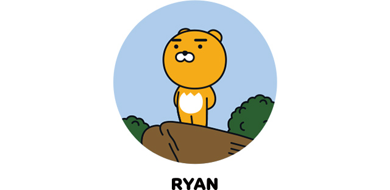

갈기가 없는 것이 콤플렉스인 수사자, 라이언. 큰 덩치와 무뚝뚝한 표정으로 오해를 많이 사지만, 사실 누구보다도 여리고 섬세한 소녀감성을 지닌 반전 매력의 소유자! 원래 아프리카 둥둥섬 왕위 계승자였으나, 자유로운 삶을 동경해 탈출! 카카오프렌즈의 든든한 조언자 역할을 맡고 있습니다. 꼬리가 길면 잡히기 때문에, 꼬리가 짧습니다. 
호기심 많은 장난꾸러기 무지의 정체는 사실 토끼 옷을 입은 단무지!
토끼 옷을 벗으면 부끄러움을 많이 탑니다.
단무지를 키워 무지를 만든 정체불명의 악어 콘!
이제는 복숭아를 키우고 싶어 어피치를 찾아 다닙니다.